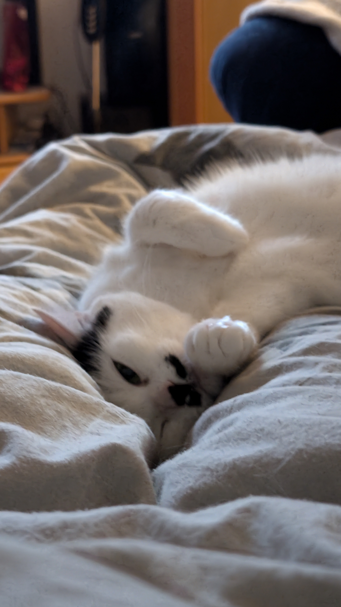

Meine Reise in der IT fängt 2019-2020 an, als ich die HTL in Dornbirn besucht habe.
Dort habe ich den Zweick Wirtschaftsingeneur - Betriebsinformatik für 1 Jahr besucht.
Dabei kam ich das erste mal mit Java in Kontakt, welches mir sehr viel Spaß gemacht hat.
Da ich aber in anderen Fächern eine 5 hatte und es mir vom Konzept her nicht gefiel, musste ich sie abbrechen.
Von 2020-2024 habe ich eine Lehre als IT-Systemtechniker angefangen/abgeschlossen.
Heute nehme ich im Kurs vom Digital Campus teil.
Zu meinen Hobbys gehört zocken. Verschiedene Spiele wie Rainbow Six Siege, Arma3, GMod oder Stardew Valley gehören zu meiner Bibliothek.
Meine Katze Bubi ist ein wichtiger Teil meines Alltags und bringt mich immer wieder zum Lachen.
